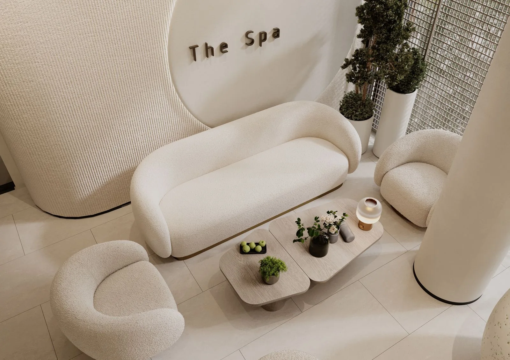

Belico arckezelésekHidratálás és regeneráció
Skin regeneration érzékeny bőrre és Hydro energy mélyhidratáló kezelés. Növényi összetevők és célzott hatóanyagok a bőröd igényeire szabva.
Érdekel a kezelésA szépség mindenkié
Természetes hatóanyagok, modern bőrfiatalító technológiák és figyelem, amely csak neked szól. Találjuk meg együtt, mire van szüksége a bőrödnek.



Hangulati stockfotók, nem a szalon saját felvételei.
Minden bőr más. A megfelelő kezelés kiválasztását alapos bőrdiagnosztikával és személyes kezelési tervvel segítem.
Skin regeneration érzékeny bőrre és Hydro energy mélyhidratáló kezelés. Növényi összetevők és célzott hatóanyagok a bőröd igényeire szabva.
Érdekel a kezelésPeptidekre épülő luxus arckezelések, arc-nyak-dekoltázs kezelések. Személyes konzultációval segítek megtalálni a megfelelő megoldást.
Érdekel a kezelésDrDerm tű nélküli mezoterápia, fotorejuvenáció, mezopen és anti-akné kezelések a bőröd aktuális állapotához igazítva.
Segítséget kérekMinden kezelésem a bőröd hosszú távú egészségét és szépségét szolgálja. Gondosan kiválasztott hatóanyagokkal, modern technológiákkal és személyes odafigyeléssel dolgozom.
Időpontot kérekFigyelembe veszem bőröd aktuális állapotát, hogy a számára legmegfelelőbb törődést kapja.
Kíméletes eljárásokkal segítem a bőr regenerálódását, kellemes és kényelmes környezetben.
Nálam nincs futószalag. Minden kezelés privát, nyugodt és lélekfeltöltő élmény.
A szalonon túl is segítek: a bőrödnek megfelelő napi rutint és termékeket ajánlok.
Hangulati illusztráció.
Sipos Eliza vagyok, az Eliza Beauty Salon megálmodója.
14 éve segítek vendégeimnek abban, hogy bőrük egészségesebb, fiatalosabb és ragyogóbb legyen. A Beauty Academy szakmai trénereként és mesterkozmetikusként folyamatosan fejlesztem tudásomat.
Nálam nincs sablonkezelés, csak valódi törődés és hosszú távú megoldások. A legmodernebb technológiákat a bőröd egyedi igényeivel hangolom össze.
Telefonon vagy az űrlapon tudsz bejelentkezni. Előre egyeztetett időpontban, hétfőtől péntekig 9 és 16 óra között várlak.
Felmérjük bőröd állapotát és átbeszéljük arcápolási szokásaidat. Ezek alapján állítom össze a kezelési tervedet.
A személyre szabott kezelést relaxáló arcmasszázs egészíti ki, hogy bőröd és te is felfrissülj.
Praktikus tanácsokkal és személyes termékajánlásokkal segítek kialakítani az otthoni rutinodat.
Elégedettségi garancia
Hiszek abban, hogy a megfelelő kezelés látványos változást hoz. Ezért 5 alkalmas kúrák esetén elégedettségi garanciát vállalok: ha a bőröd nem mutat javulást, a kezelés árának 50%-át visszatérítem.
A minőség mércéje: a visszatérő vendégek.
„Korábbi rossz tapasztalatok miatt sokáig nem mertem kozmetikushoz járni, de ez az itt töltött első alkalmat követően megváltozott. A bőröm minden kezelés után szinte ragyog, remekül érzem magam, és Eliza segítségével sikerült kialakítanom a helyes, bőrtípusomnak megfelelő arcápolási rutint. Szívből ajánlom!”
„Eliza nagyon kedves, csupaszív kozmetikus, a kozmetika csodaszép, tiszta, hangulatos, mindig örömmel járok ide vissza. Legutóbb a 10 alkalmas arcfiatalító kezelést vettem igénybe, és az eredmény magáért beszél, azóta több pozitív visszajelzést is kaptam ismerőseimtől. Csak ajánlani tudom Elizát!”
Kérdésed maradt? Keress bizalommal, szívesen segítek.
Nem, a kozmetikámban kizárólag időpontra fogadok vendégeket.
Az első találkozás alkalmával a kezelés előtt diagnosztizálom a bőrödet, és felvázolom a kezelési tervet.
Igen, természetesen! Az első alkalmat követően elmondom, mire figyelj a mindennapokban, és milyen termékeket használj, hogy a bőröd a lehető legjobb törődést kapja.
Bankkártyával és készpénzzel is fizethetsz a szalonban.
Kérdésed van a kezelésekről, vagy időpontot szeretnél egyeztetni? Keress bizalommal, és segítek megtalálni a számodra legjobb megoldást!
1092 Budapest, Ráday u. 1.
+36 20 344 9272hello.elizabeauty@gmail.comHétfő–péntek: 9:00–16:00
Szombat–vasárnap: zárva
Kizárólag előre egyeztetett időpontban fogadlak.